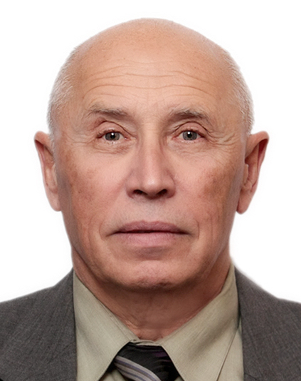
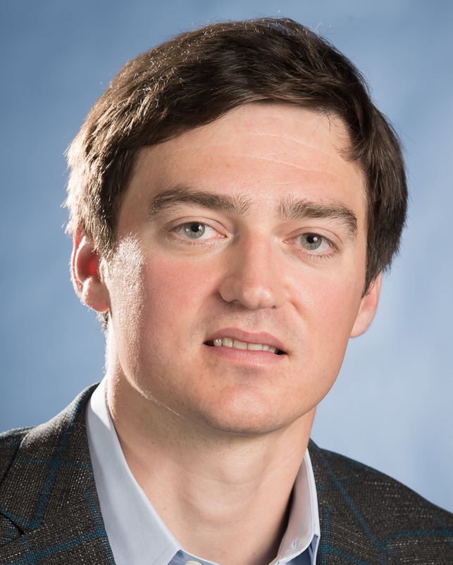
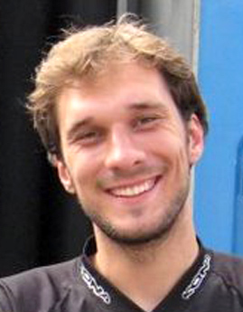

Keynote Speakers (in progress)
|  | ||||
| Alexander Bernstein Principal Research Scientist Skolkovo Institute of Science and Technology |
Evgeny Burnaev Associate Professor Skolkovo Institute of Science and Technology |
Andrzej Cichocki Professor Skolkovo Institute of Science and Technology |
|  |  | |
| Dmitry Dylov Assistant Professor Skolkovo Institute of Science and Technology |
Ivan Oseledets Associate Professor Skolkovo Institute of Science and Technology |
The IEEE International Conference on Data Mining series (ICDM) has established itself as the world’s premier research conference in data mining. It provides an international forum for presentation of original research results, as well as exchange and dissemination of innovative, practical development experiences. The conference covers all aspects of data mining, including algorithms, software and systems, and applications. ICDM draws researchers and application developers from a wide range of data mining related areas such as statistics, machine learning, pattern recognition, databases and data warehousing, data visualization, knowledge-based systems, and high performance computing. By promoting novel, high quality research findings, and innovative solutions to challenging data mining problems, the conference seeks to continuously advance the state-of-the-art in data mining. Besides the technical program, the conference features workshops, tutorials, panels.
Important Dates
All deadlines are at 11:59PM Pacific Time.| Workshop paper submissions | August 7, 2018 |
|---|---|
| Workshop paper notification | September 4, 2018 |
| Workhsop date | November 17, 2018 |
Aims and Scope of the Workshop
The workshop is oriented to all potential applications of deep learning and matrix/tensor decomposition and networks in feature extraction, classification, recognition, segmentation, enhancing, clustering, anomaly detection, and prediction of brain and behavior data – as applied to the multi-modal brain data (MRI/fMRI/CT, EEG/MEG, and biomarker assays), especially for mental disorders. Special focus will be made on the practical aspects of how to design and train deep neural networks with appropriate reduction of the dimensionality, to achieve high classification performance and reliability.
Recent breakthroughs in machine learning, especially deep neural networks and tensor networks, extend far beyond their original purpose. It is expected that physicians will be able to completely rely on the machine interpretation of MRIs, CT, PET scans using deep learning in the nearest future. Same aspiration exists with regard to detection of disease-specific patterns in EEG/MEG time series data and to automated histopathology of brain tissue samples. Combined together, these methodologies look at the brain at all possible angles and scales and, thus, they are becoming more than just diagnostic tools. These approaches show promise in alleviating early detection of mental disorders and brain cancers, accelerate the search for life-saving pharmaceuticals, and provide insights about the molecular pathways of the neurodegenerative diseases.
Deep neural networks have revolutionized computer vision through the end-to-end learning (i.e., learning from the raw data), but also emphasized the need for development of optimization techniques in order to work with the Big Data in the most efficient way. It is because of the lack of such techniques that the early detection of the major neurodegenerative diseases (such as ADHD, Autism, or Alzheimer’s) is still difficult to accomplish with the neural networks today. In these conditions, very large-scale brain imagery datasets and the time-series data are accompanied by the abundance of the expression tests from the established and experimental neurological biomarkers which routinely appear in the research laboratories today. For example, recent breakthroughs in the -omix and gene editing tools (such as Crispr/Cas9) have enabled experimentation with biomarkers in a very vast parameter space, yet again emphasizing the acute need for efficient deep learning approaches and universally applicable analytics.
Call for Papers
- Magnetic Resonance Imaging (MRI) / functional Magnetic Resonance Imaging (fMRI)
- Electroencephalography (EEG)
- Magnetoencephalography (MEG)
- Positron Emission Tomography (PET)
- Near-infrared spectroscopy (NIRS)
- Computed Tomography (CT)
- Behavioral Data
- Physiological Data
- Electromyography (EMG)
Submission Guidelines
Paper submissions should be limited to a maximum of ten (10) pages, in the IEEE 2-column format (link), including the bibliography and any possible appendices. Submissions longer than 10 pages will be rejected without review. All submissions will be triple-blind reviewed by the Program Committee on the basis of technical quality, relevance to scope of the conference, originality, significance, and clarity. The following sections give further information for authors.
Triple blind submission guidelines
Since 2011, ICDM has imposed a triple blind submission and review policy for all submissions. Authors must hence not use identifying information in the text of the paper and bibliographies must be referenced to preserve anonymity. Any papers available on the Web (including Arxiv) no longer qualify for ICDM submissions, as their author information is already public.
What is triple blind reviewing?
The traditional blind paper submission hides the referee name from the authors. The triple-blind paper submission and review, in addition, also hides the authors’ names from the referees, and the referees’ names during discussion. The names of authors and referees remain known only to the PC co-chairs, and the authors names are disclosed only after the ranking and acceptance of submissions are finalized. Although there is much debate on the merits and perceived benefits of triple blind reviewing, these are not discussed here. Our main purpose is to implement this policy in ICDM toward understanding the influence of the authors’ identity, whether conscious or unconscious, on the reviewer’s attitude toward a submission. Hence it is imperative that all authors of ICDM submissions work on concealing their identity in the content of the paper. It does not suffice to simply remove the authors’ names from the first page.
How to prepare your submissions
The authors shall omit their names from the submission. For formatting templates with author and institution information, simply replace all these information in the template by “Anonymous”.
In the submission, the authors’ should refer to their own prior work like the prior work of any other author, and include all relevant citations. This can be done either by referring to their prior work in the third person or referencing papers generically. For example, if your name is Smith and you have worked on clustering, instead of saying “We extend our earlier work on distance-based clustering (Smith 2005),” you might say “We extend Smith’s (Smith 2005) earlier work on distance-based clustering.”
The authors shall exclude citations to their own work which is not fundamental to understanding the paper, including prior versions (e.g., technical reports, unpublished internal documents) of the submitted paper. They should reference only necessary work using point (2). Hence, do not write: “In our previous work [3]” as it reveals that citation 3 is written by the current authors.
The authors shall remove mention of funding sources, personal acknowledgments, and other such auxiliary information that could be related to their identities. These can be reinstituted in the camera-ready copy once the paper is accepted for publication.
The authors shall make statements on well-known or unique systems that identify an author, as vague in respect to identifying the authors as possible.
The submitted files shall be named with care to ensure that authors’ anonymity is not compromised by the file name. For example, do not name your submission “Smith.pdf”, instead give it a name that is descriptive of the title of your paper, such as “ANewApproachtoClustering.pdf” (or a shorter version of the same).
Accepted papers will be published in the conference proceedings by the IEEE Computer SocietyPress.
All manuscripts are submitted as full papers and are reviewed based on their scientific merit. The reviewing process is confidential. There is no separate abstract submission step. There are no separate industrial, application, short paper or poster tracks. Manuscripts must be submitted electronically in online submission system. We do not accept email submissions.
Program Committee (in progress)
- Alexander Bernstein (Skolkovo Institute of Science and Technology)
- Evgeny Burnaev (Skolkovo Institute of Science and Technology)
- Andrzej Cichocki (Skolkovo Institute of Science and Technology)
- Dmitry Dylov (Skolkovo Institute of Science and Technology)
- Ivan Oseledets (Skolkovo Institute of Science and Technology)
Contact information of the organizers
Mailing address (common)
1 Nobel str., Moscow,
121205, Russia
NeuroDLTensor@gmail.com